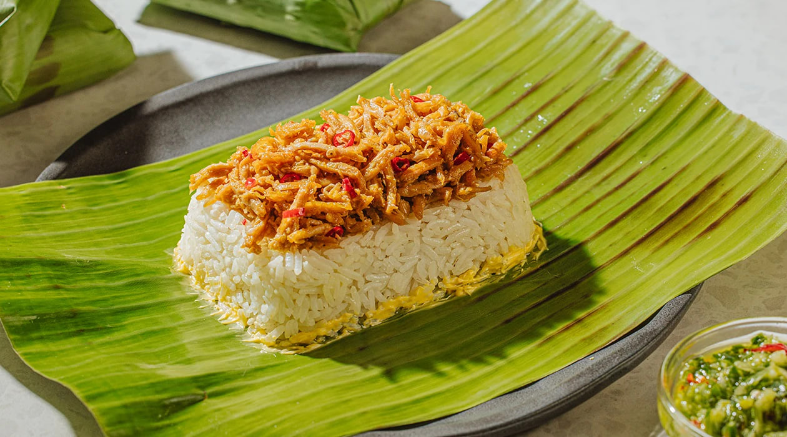

Mindanao
Pastil
Pastil (or Pater) is a popular, budget-friendly packed rice dish originating from the Maguindanao people. It is the ultimate Mindanaoan comfort food on-the-go. It consists of steamed rice topped with kagikit—finely shredded, savory, and mildly spicy cooked chicken, beef, or fish. The entire meal is tightly wrapped in a wilted banana leaf, which infuses the rice with a wonderful, earthy aroma.

Gather
Ingredients
- Cooked white rice
- Chicken breast, beef, or fish (boiled and finely shredded)
- Garlic, minced
- Onion, finely chopped
- Soy sauce
- Vinegar or calamansi (just a splash)
- Black pepper and salt
- Cooking oil
- Banana leaves, wilted over an open flame
Make it
Recipe
- Boil the meat (chicken breast is most common) until completely cooked. Drain, let cool, and shred it very finely using your hands or a fork.
- Heat oil in a pan and sauté the garlic and onion until aromatic.
- Add the shredded meat and stir-fry for a few minutes.
- Season with soy sauce, a splash of vinegar or calamansi, black pepper, and salt.
- Continue to cook over low heat until the meat is dry, toasted, and very flavorful (this is the kagikit). Set aside.
- Prepare the wilted banana leaves by cutting them into squares.
- Place a scoop of warm, cooked rice in the center of a banana leaf.
- Top the rice generously with the kagikit.
- Fold the banana leaf over the rice to form a tight, neat rectangular packet.
- The Pastil is now ready to be eaten immediately or packed for a journey.